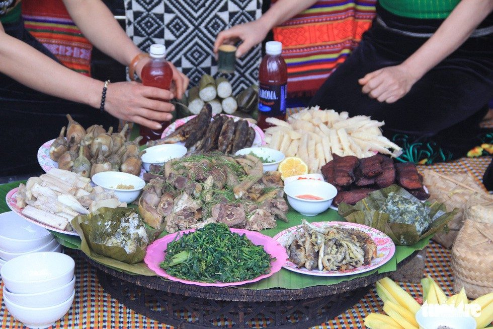

“Mùi Tết” từ căn bếp trên non
Tết ở bản bắt đầu từ tiếng chày giã bánh dày vọng ra từ căn bếp, từ mùi thịt mới nấu quyện trong khói lửa hay những chiếc bánh tròn được xếp ngay ngắn chờ đặt lên bàn thờ. Với những đứa trẻ Mông ở Pà Cò, Tết còn nằm trong mâm cơm mà cả nhà cùng ngồi bên nhau, trong những món ăn chỉ những ngày đầu năm mới có. Mâm cơm đầu năm hiện lên bằng cả hương vị và những phong tục, niềm tin cùng cách một gia đình đón mùa Xuân trên núi.
Những món ăn chỉ Tết mới có
Ở Pà Cò, Tết đến cùng tiếng chày giã bánh dày và mùi thịt đang được chuẩn bị trong bếp. Từ ngày 30 tháng 11 âm lịch, các gia đình người Mông bắt đầu sửa soạn cho năm mới. Gạo nếp được ngâm, đồ chín rồi giã thành bánh dày; gà, lợn cũng được chuẩn bị cho những bữa cơm đầu năm.

Với một đứa trẻ, có lẽ Tết dễ nhận ra nhất từ căn bếp. Mấy ngày này, mẹ bận hơn, bố tất bật nhiều việc, trong nhà lúc nào cũng thơm mùi khói bếp. Em biết Tết đến khi nghe tiếng chày giã vào cối và thấy những chiếc bánh dày tròn vo đã được làm xong, xếp ngay ngắn trong nhà.
Bánh dày ở giữa mâm cơm Tết
Nếu ngày Tết của người Kinh có bánh chưng thì với người Mông ở Pà Cò, bánh dày giữ một vị trí đặc biệt. Ngày 30 Tết, các gia đình làm bánh dày để dâng lên tổ tiên. Trên bàn thờ, bánh dày được đặt cùng các lễ vật trong nghi thức đón năm mới.
Bánh được làm từ gạo nếp nương. Xôi sau khi đồ chín được đưa vào máng gỗ khi còn nóng để giã nhuyễn. Bánh sau đó được nặn thành hình tròn. Với người Mông, hình tròn của bánh dày tượng trưng cho Mặt Trăng và Mặt Trời. Chiếc bánh cũng gửi gắm mong ước về một năm mới no ấm, bình an và hạnh phúc.
Mâm cơm ba ngày Tết
Trong ba ngày Tết chính, mâm cơm của người Mông ở Pà Cò có những món quen thuộc như thịt lợn, thịt gà và bánh dày. Một điều khác với bữa cơm thường ngày là người Mông kiêng ăn rau trong những ngày này. Cơm cũng không chan canh. Theo quan niệm truyền thống, không ăn rau để tránh năm mới cỏ mọc nhiều trên nương, còn không chan canh là để tránh mưa lũ ảnh hưởng đến mùa màng.
Trước khi cả nhà ngồi xuống, một phần thức ăn được chuẩn bị để làm lễ cúng tổ tiên. Bánh dày, thịt gà, thịt lợn và những lễ vật trong nhà được đặt lên bàn thờ. Sau nghi lễ, cả gia đình mới cùng nhau ăn bữa cơm đầu năm.
Câu chuyện trên mâm cơm

Những món ăn này không phải lúc nào cũng xuất hiện trong bữa cơm thường ngày. Bánh dày gắn với tháng Tết, còn thịt gà, thịt lợn được chuẩn bị từ trước Tết để phục vụ những ngày đầu năm. Bởi vậy, với trẻ nhỏ, chỉ cần nhìn căn bếp những ngày cuối năm cũng có thể biết Tết đang đến rất gần.
Có lẽ, một đứa trẻ nhớ về Tết cũng bắt đầu từ những điều như thế. Một chiếc bánh dày còn thơm mùi gạo nếp, những miếng thịt được xếp ngay ngắn trên mâm, tiếng người lớn gọi nhau trong bếp và bữa cơm mà cả nhà cùng quây quần bên nhau.
Ở Pà Cò, những món ăn ấy làm nên hương vị của ngày đầu năm. Nhưng với trẻ nhỏ, điều đáng nhớ nhất là năm nào Tết đến, căn bếp lại nghi ngút mùi khói Tết và cả nhà lại ngồi bên nhau.